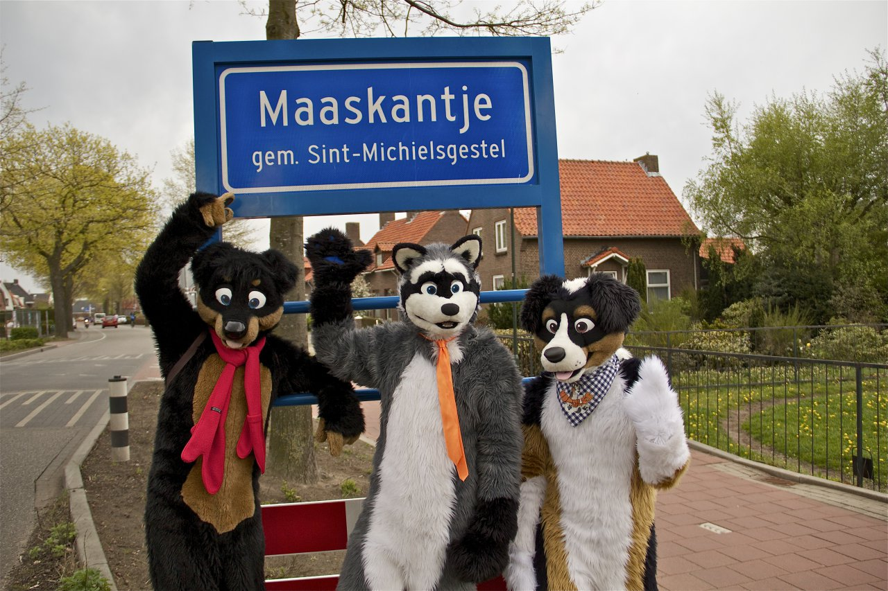

Щенников Илья | ИДМ-19-05


 Лабораторная работа 1 Лабораторная работа 2 Лабораторная работа 3
Лабораторная работа 1 Лабораторная работа 2 Лабораторная работа 3
Лабораторная работа 1
В ходе лабораторной работы была создана личная страница для публикования отчетов
Хостингом размещения является GitHub.com
Страница создана с использованием HTML, CSS & JavaScript
Лабораторная работа 2
В ходе лабораторной работы была сформирована команда под названием Maaskantje
Участники комадны были распределены на роли. Мои роли:
-РП Управление проектами - Координатор (Председатель, Руководитель, Coordinator) - Project manager
-ПП Прикладное программирование - Исполнитель (Рабочая пчелка, Implementer) - Programmer

Лабораторная работа 3
В ходе лабораторной работы команда выполнила задание по организации
локальной сети в среде Cisco Packet Tracert 6.3.